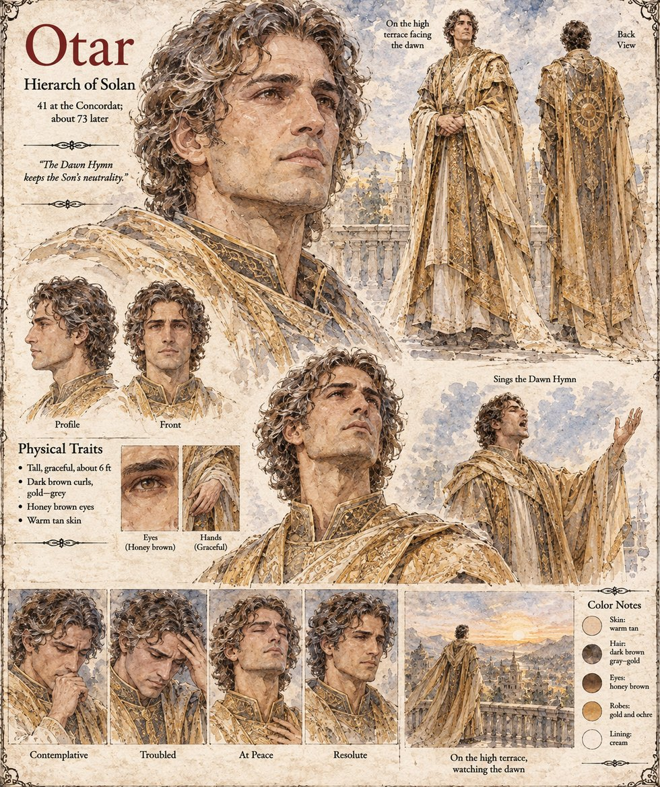

Otar
Hierarch of Solan, the Son’s college · singer of the Dawn Hymn · 41 when the Council first sits
The Hierarch of Solan, the Son’s college, is forty-one, and golden-voiced, with a handsome and unfinished face. He sings the Dawn Hymn himself on the high days, and he sings it superbly, and it is an open secret in the Synod that he spends the remaining days of the year being slightly afraid of the sound of it. He is one of the three people to whom the Warden of Ormeli lays out the whole contents of a hearth shelf on a table of black basalt, and then waits to be told what it means.
In the thirteenth year, when the Son’s turn comes round and his priests loose an arrow of Ushkhevi’s to hold off the autumn rains until the apricots and the grapes are in, there are twenty-nine days of clear gold weather to the last row of the last field, the loveliest vintage anyone can remember, and Otar sings the Dawn Hymn to a table of forty and wept at the sound of his own voice. The Memorandum on Proportion has the other column: Taken from: the plain of Orvaneti; autumn rains, none; winter sowing, lost. He is among the Hierarchs who send Ketevan gifts, a brazier of Solan’s own bronze, which she lights exactly once, to see whether it will burn, and returns in the season it arrived. On the twenty-fifth of Iverin, when the Elara host sets out down the Wine Road, he sings the Dawn Hymn from the high terrace of the temple to a sun that had not been told which side to take, while the valleys of the Son sit out the march in weighted neutrality. At the crowning of the Fourth Crown he sings it at noon, superbly, to a sky that did not mind.
The manuscript gives his age of forty-one, his golden voice, his handsome unfinished face, the Hymn, and the fear. It never says what became of him. The sheet’s tall, graceful build of about 6 ft, age of about 73 “later” (41 at the Concordat), dark brown curls going gold-grey, honey-brown eyes, warm tan skin and gold-and-ochre robes with a cream lining are its own, as are its panels Contemplative, Troubled, At Peace and Resolute and its scenes Sings the Dawn Hymn and On the high terrace, watching the dawn. The line it prints for him, The Dawn Hymn keeps the Son’s neutrality., is not in the manuscript.
“being slightly afraid of the sound of it”